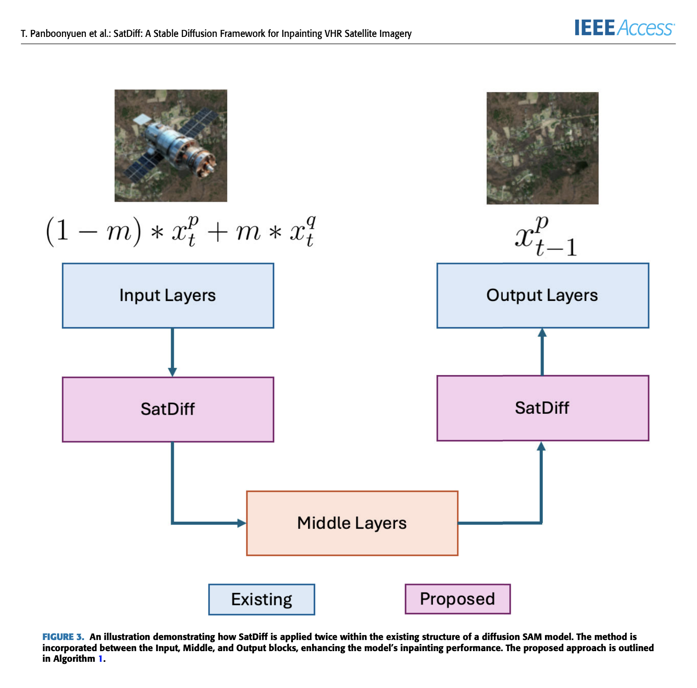
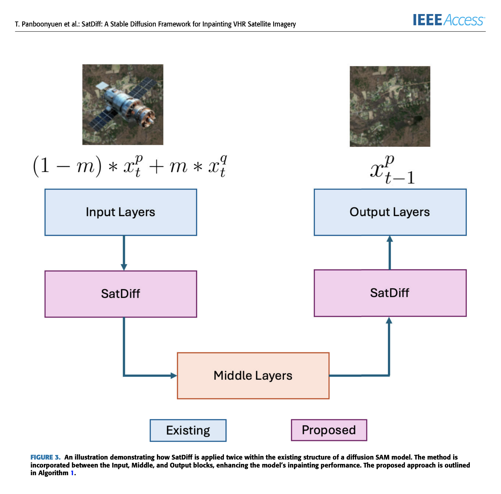

SatDiff leverages the power of Stable Diffusion Models to intelligently inpaint missing or corrupted regions in very high-resolution satellite imagery. Designed specifically for Earth observation, it preserves both texture and geospatial semantics—making it ideal for applications where visual and structural integrity matter most.
Built at the Advancing Geoscience Laboratory (AGL), our model incorporates a custom dual-branch architecture with attention-enhanced modules, tailored for aerial and satellite domains. It significantly outperforms classical and deep-learning inpainting approaches in PSNR, SSIM, and perceptual realism.
- PSNR: 35.72 dB
- SSIM: 0.952
- Perceptual Realism: High structural fidelity & semantic awareness

 
